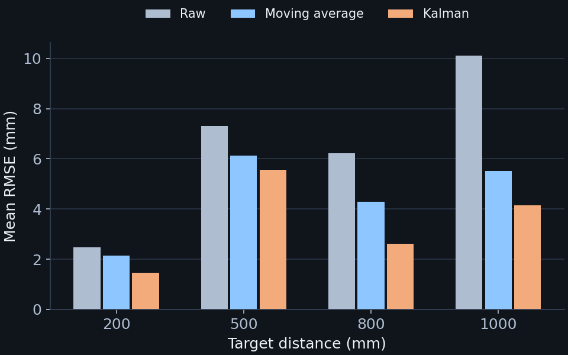
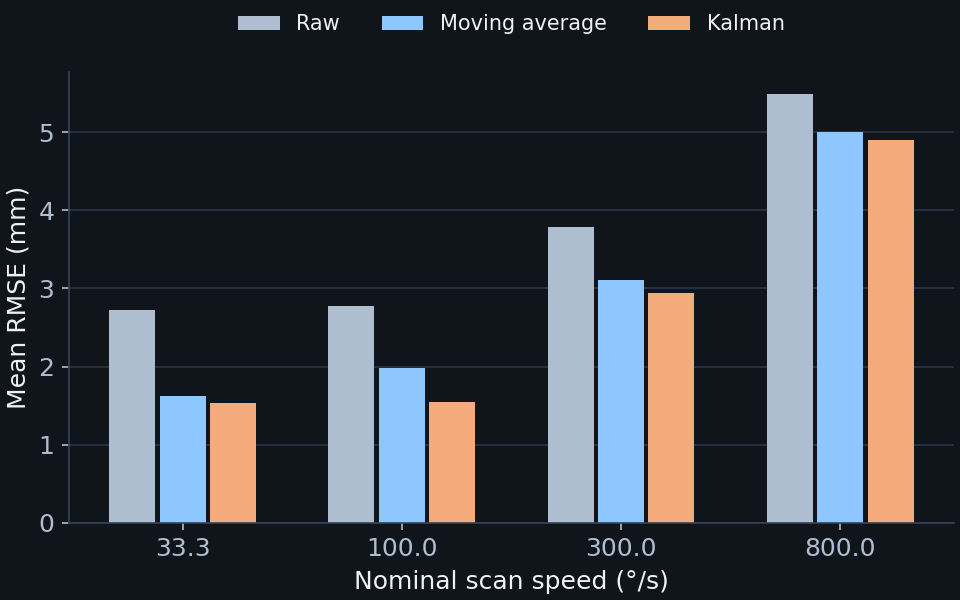
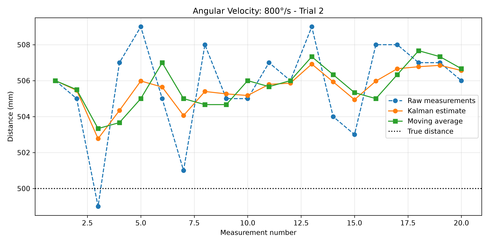

Each condition has three trials of 20 readings. Trial 1 supplies the sample variance used as measurement noise R. Trials 2 and 3 are evaluated separately with process noise Q = 1 mm². The scan trials use a 500 mm reference target.
01
Calibration and evaluation
02
What changed after filtering
Kalman RMSE was lower than both baselines in all 16 evaluation trials. Each bar shows the mean of the two trial-level RMSE values for that condition.
Static ranging

View RMSE values (mm)
| Distance (mm) | Raw | Moving avg. | Kalman |
|---|---|---|---|
| 200 | 2.47 | 2.14 | 1.45 |
| 500 | 7.32 | 6.12 | 5.57 |
| 800 | 6.22 | 4.30 | 2.61 |
| 1000 | 10.12 | 5.52 | 4.14 |
Servo scanning

View RMSE values (mm)
| Speed (°/s) | Raw | Moving avg. | Kalman |
|---|---|---|---|
| 33.3 | 2.72 | 1.62 | 1.54 |
| 100.0 | 2.77 | 1.98 | 1.55 |
| 300.0 | 3.78 | 3.10 | 2.95 |
| 800.0 | 5.49 | 5.01 | 4.90 |
03
Bias at higher scan speed
At 800°/s, mean Kalman RMSE was 4.90 mm and signed bias remained at +4.82 mm. Smoothing reduced sample variation while the distance estimate still ran high.

04
Reproduce the analysis
Extract the download, install the requirements, then run python kalman_filter.py from the extracted folder. The script writes plots and CSVs beside the input file. The download retains the values and row positions used by the analysis.
Source and original readings ↓Static trial results ↓Scan trial results ↓Static summary ↓Scan summary ↓
Scalar Kalman update · kalman_filter.py
def kalman_filter(measurements, Q, R):
"""
Estimate a constant distance using a 1D Kalman filter.
Q: Process noise variance (mm^2)
R: Measurement noise variance (mm^2)
"""
x = float(measurements[0])
P = float(R)
estimates = [x]
gains = [np.nan]
for z in measurements[1:]:
# Prediction
x_pred = x
P_pred = P + Q
# Kalman gain
K = P_pred / (P_pred + R)
# Measurement update
x = x_pred + K * (z - x_pred)
# Uncertainty update
P = (1 - K) * P_pred
estimates.append(x)
gains.append(K)
return np.array(estimates), np.array(gains)